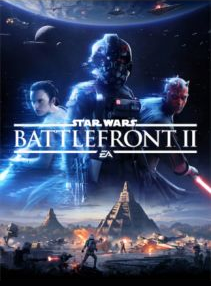

Star Wars Battlefront 2

R$32,91

Descrição do produto
Se você sonha com uma carreira militar entre as estrelas e ama o universo de George Lucas, então o Star Wars Battlefront II é o jogo para você. Batalhas tremendo na Terra, história atraente, visuais deslumbrantes, é uma verdadeira experiência da Guerra das Estrelas para o lado claro e escuro da Força!
Requisitos
Requisitos do Sistema: 64-bit Windows 7 SP1, Windows 8.1 e Windows 10
Processador: Intel Core i5 6600K / AMD FX-6350
Memória: 8 GB RAM
Gráficos: NVIDIA GeForce® GTX 660 2GB / AMD Radeon™ HD 7850 2GB
Espaço em disco: 15 GB
Outros: Conexão online 512 KBPS ou mais


© 2017 Alaff e Rodrigo Corporation. Todos os direitos reservados. Todas as marcas são propriedade dos seus respectivos desenvolvedores.